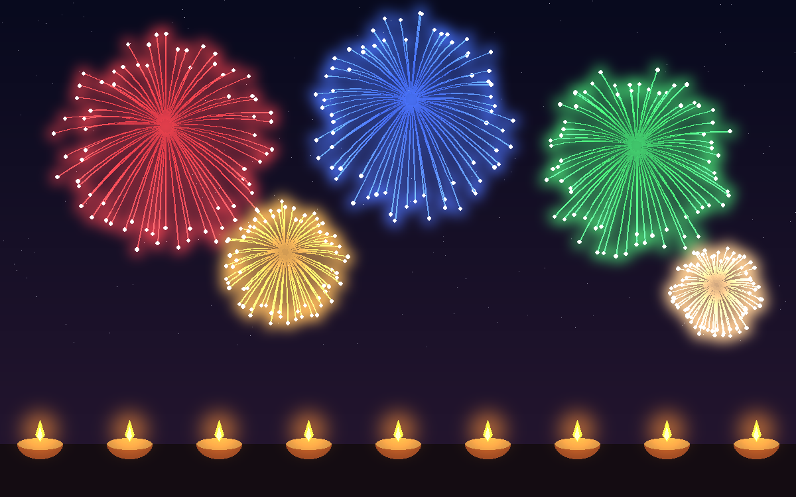
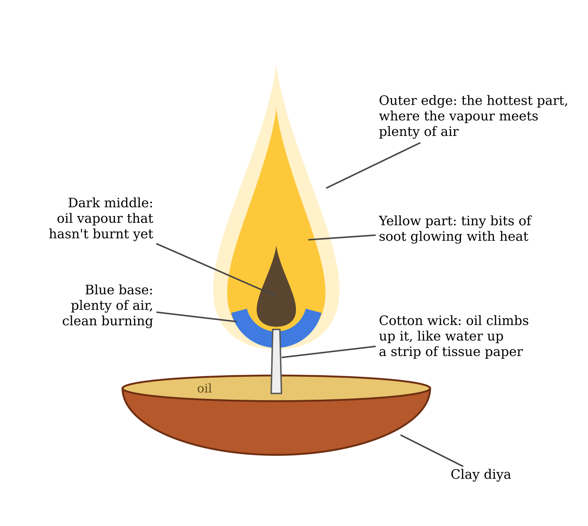
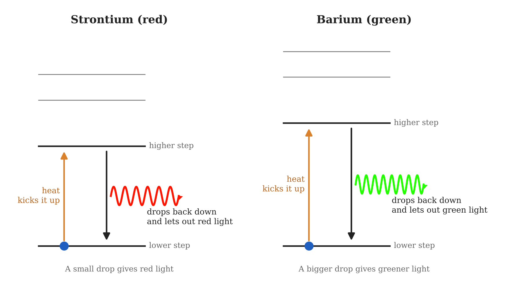
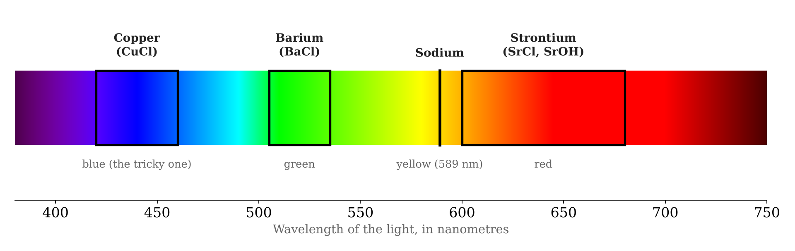
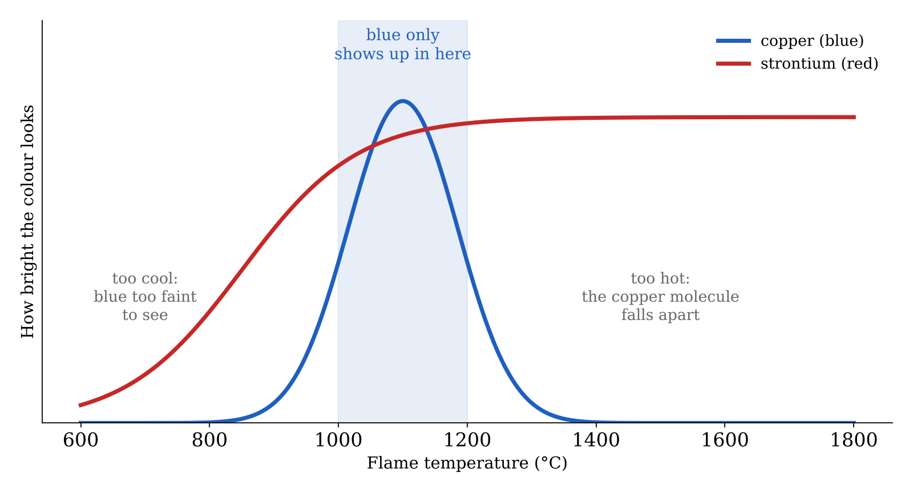
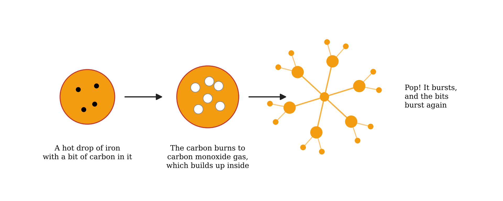

Chemistry · Festivals
Why Is Blue So Rare in the Diwali Sky?
Diyas, flame colours, phuljhadi sparks and the firework colour that hardly ever shows up. A chemist's look at the light of Diwali.

Diwali night in Patna is bright in a way no other night of the year is. Diyas line the parapets, every balcony has its string of lights, and once it gets dark the sky starts going off. Red, green, gold, silver, big white flashes.
I watched all of it as a kid without thinking twice. It was only years later, with a chemistry degree behind me, that I noticed something was nearly always missing. You hardly ever see a proper deep blue up there. Lots of red, lots of green. Blue, almost never.
That isn't an accident, and the reason is worth knowing. But I want to begin with the smallest light of the festival.
The diya
A diya is just a clay bowl, some mustard oil or ghee and a cotton wick. Yet if you hold a matchstick to the oil itself, nothing happens. Liquid oil won't burn. Only oil vapour will.
That's the wick's job. Cotton is cellulose fibre, full of tiny gaps, and the oil climbs those gaps by capillary action, the way water creeps up a bit of tissue paper dipped in a glass. At the tip, the flame's heat turns the oil to vapour, and the vapour burns in the air. That heat vaporises the next bit of oil coming up the wick, and so the lamp keeps going on its own for hours.
The oil is mostly triglycerides, long chains of carbon and hydrogen. Burnt completely, they would give just carbon dioxide and water. But a small flame can't get enough oxygen into its middle to finish the job, so specks of carbon, soot, form there first.

Many families soak new diyas in a bucket of water for a few hours before Diwali. It looks like one of those things you just do, but it's good materials science. A diya is fired only at a low temperature, so its clay stays porous. A dry diya soaks the oil into its own walls and the flame dies early. A diya that's already full of water has no room left for the oil to go.
Two kinds of light
That soot is why the diya's flame is yellow. The specks sit at roughly 1000 °C and simply glow, the same way an iron rod in a blacksmith's fire goes red, then orange, then yellow as it heats up. Anything hot enough glows like this. It's called incandescence, and the light comes out as a broad mix of colours that our eyes add up to a warm yellow.
Most firework colours come from something else entirely: single atoms and small molecules.
The electrons in an atom can only sit at certain fixed energies, a bit like the steps of a staircase. Heat knocks an electron up a step or two. It drops back almost at once, and as it falls it throws out the extra energy as a little packet of light. Since the steps are fixed, so is the energy of that packet, and so is its colour.

Each element has a staircase of its own, and so a set of colours of its own. If you did the flame test in school, you've seen this. A wire dipped in a salt and held in the burner turns the flame a colour that gives away the metal. A firework shell is really a flame test done big, in the sky.
Red, green, and the trouble with blue
The reds come from strontium salts. In the flame they form strontium monochloride and strontium hydroxide, and those molecules give off red light. Green comes from barium, through barium monochloride. Yellow is sodium, with its famous line at 589 nm, the same orange-yellow you used to see from old sodium street lamps. Sodium is almost too bright, in fact. A small trace of it can drown out every other colour in a shell. Purple is usually strontium red and copper blue mixed.

Which brings me to blue. The blue comes from copper, through a molecule called copper monochloride, and that molecule is touchy. If the flame is too cool, it glows too weakly to stand out against the night. Push the temperature past roughly 1200 °C and it falls apart, and instead of blue you get a pale, washed-out white.

Strontium and barium are much less fussy, which is why red and green are everywhere. For a deep blue, the maker has to keep the burn inside a narrow band of temperature and make sure there's enough chlorine around for the copper to hang on to. Doing that inside a shell that bursts and is gone in a moment, high above the rooftops, is genuinely hard.
So when you do spot a good blue this year, give it a moment. Someone got their chemistry just right.
Gold, silver and the phuljhadi
Gold and silver are a different story. They're incandescence again, the same as the diya.
Gold sparks are bits of iron or charcoal glowing orange-yellow as they fly. Silver and the brilliant whites come from aluminium or magnesium. These metals burn so hard that their particles get much hotter than iron, and the hotter a glowing thing is, the whiter it looks.
Then there's the phuljhadi, the sparkler every child in the house wants to hold. Watch its sparks closely and many of them don't go straight. They split, and split again, like tiny branching twigs.
That's the carbon at work. The sparks are droplets of molten iron, and the iron carries a little carbon in it. As a droplet flies, the carbon reacts with oxygen and makes gas, mostly carbon monoxide, inside it. The gas builds up until the droplet bursts into smaller ones, which can burst again in turn. Pure iron would give plain straight sparks. Steel workers have known this for a long time and still judge roughly how much carbon is in a piece of steel from how much its sparks branch on a grinding wheel.

The same colours that read the Sun
What I find most remarkable is how far this simple idea has gone.
Around 1860, Robert Bunsen and Gustav Kirchhoff in Germany showed that every element gives its own fixed pattern of colours, a fingerprint made of light. They used it to find two new elements, caesium and rubidium, purely from the colours they gave in a flame.
A few years later, on 18 August 1868, the French astronomer Jules Janssen watched a total solar eclipse from Guntur, in what is now Andhra Pradesh. In the light of the Sun's edge he saw a yellow line that didn't belong to any element known on Earth. It sat very close to the sodium line, at about 588 nm, but not quite on it. Later that year the English astronomer Norman Lockyer saw the same line and named the new element helium, after Helios, the Sun. So the first sighting of helium was made from India. It was seen in sunlight almost thirty years before anyone found it here on Earth.
That method, spectroscopy, is how we know what faraway stars are made of. It's also how a lab checks your drinking water for metals. And underneath it is exactly what happens in a firework: electrons dropping down their staircases and giving off light of one exact colour.
So this Diwali, when you light the diya and the sky over Patna starts to fill up, you're seeing both kinds of light at once. Hot soot glowing in a little clay lamp, and atoms flashing their colours overhead. And if a true blue goes up, you'll know what it took.
Happy Diwali, and stay safe.
Sameer Saurav teaches chemistry at A.N.S. College, Nabinagar, Bihar. He holds a PhD from IIT Kanpur and a BS-MS in Chemical Sciences from IISER Kolkata, and writes on chemistry for general readers in English and Hindi. More about him.